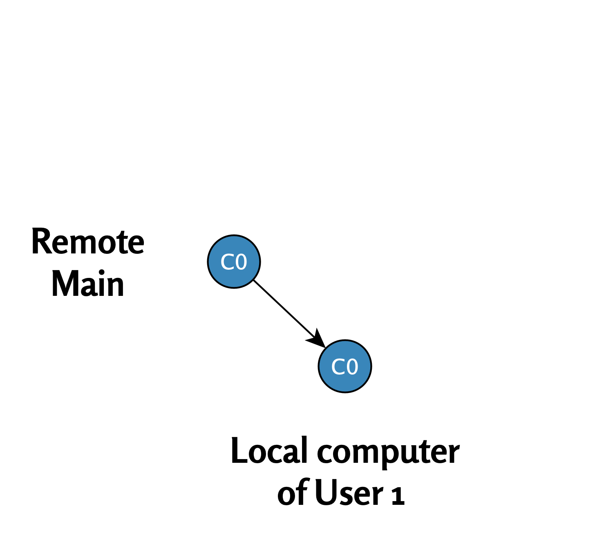
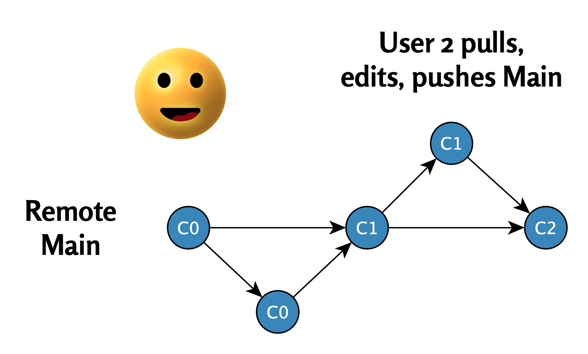

3 Ongelmaton päähaara
Tässä luvussa tarkastelemme yksinkertaista esimerkkiä, jossa kaksi käyttäjää työskentelee päähaarassa ilman ristiriitoja. Näemme, miten muutokset kulkevat loogisesti ja ilman ongelmia Gitin avulla.
3.1 Tilanne: Remote Main (C0)
Työ alkaa etähakemistossa olevasta päähaarasta, jossa viimeisin tilanne on commit C0.
Etähakemistoa kuvaa seuraava kaavio:
3.2 Käyttäjä 1: Pull (C0)
Pull: Käyttäjä 1 lataa uusimmat tiedot etähakemistosta (C0) paikalliseen hakemistoonsa.

3.3 Käyttäjä 1: muokkaus ja push (C1)
- Muokkaus: Käyttäjä 1 muokkaa tiedostoja ja tekee commitin
C1. - Push: Muutokset päivitetään takaisin etähakemistoon.
Tilanne etähakemistossa commitin C1 jälkeen:

3.5 Käyttäjä 2: muokkaus ja push (C2)
- Muokkaus: Käyttäjä 2 muokkaa tiedostoja ja tekee commitin
C2. - Push: Muutokset päivitetään takaisin etähakemistoon.
Tilanne etähakemistossa commitin C2 jälkeen:

3.6 Yhteenveto
Tässä yksinkertaisessa esimerkissä molemmat käyttäjät työskentelivät päähaarassa ilman ristiriitoja. Jokainen vaihe seuraa loogisesti toistaan: pull → muokkaus → commit → push.
Seuraavassa luvussa tarkastelemme tilannetta, jossa molemmat käyttäjät muokkaavat commitia C0 samanaikaisesti. Tämä voi johtaa divergent-haaroihin ja konfliktien ratkaisuun.
R-opas by Ville Langén is licensed under Attribution-ShareAlike 4.0 International